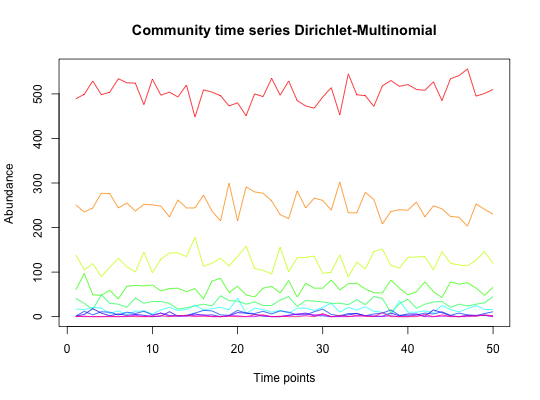

Simulate the output of a sequencing experiment, with taxa as rows and samples as columns.
simCountMat(N, pi = c(), samples = 100, counts = 1000, distrib = "dm", maxcount = 100, mode = 1, k = 0.5, theta = 0.002, norm = F, shuffle.samples = F)
| N | the number of taxa |
|---|---|
| pi | taxon proportion vector of length N (if smaller N, it is generated using the mode and k parameters) |
| samples | the number of columns in the matrix |
| counts | either the total number of counts in each sample or a vector specifying the count number in each sample |
| distrib | "dm" for Dirichlet-Multinomial distribution or "unif" for uniform distribution |
| maxcount | maximal count number for any taxon (only for uniform distribution) |
| mode | how the taxon probability vector for the DM distribution is to be generated (1=perfectly even, 2=sampled from uniform distribution, 3=dominant taxon has probability of 0.95 and all others have equal probability, 4=probabilities are sampled from a Poisson distribution with lambda set to 0.5, 5=using bstick function from vegan, 6=using geometric series with parameter k) |
| k | evenness parameter of mode 6 |
| theta | overdispersion parameter of the DM distribution |
| norm | normalize matrix column-wise, such that the entries in each column add to one |
| shuffle.samples | shuffle each sample |
a count matrix or relative abundance matrix
